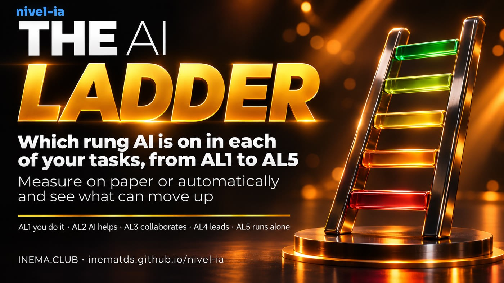

Almost everyone thinks they use AI a lot, but they can't say which tasks it already handles on its own and which still pass through their hands. The AL1–AL5 Ladder measures this task by task, on paper or automatically, and shows which task can move up a rung now—before you hand too much over to an AI that still makes mistakes, or keep doing by hand what it already does well.

Without measuring, you don't know what you still do by hand, what AI already does on its own, or which doors you've opened for it. This kit gives you a five-rung scale, from AL1 (you do it yourself) to AL5 (AI runs on its own), and two ways to measure: a paper form that works for anyone and any AI, and a program that reads Claude Code and Codex logs (AI assistants that work on your computer) and records each connection used. If you only use ChatGPT or another AI in a browser, the form is enough. In the end, you'll know which rung each task is on, which one can move up now, and when to move down. To get started, just print the form.
AL means autonomy level: how much AI does without you. The rung belongs to a task, not to a person or an AI. You might be at AL5 for translating subtitles and AL2 for replying to a customer. Example at every rung: replying to a customer's email.
AI isn't involved.
You read, think, write, and send.
You ask, it answers, you do the work.
You ask, "How should I reply to this?" and write the response.
You work together, step by step. You guide each step.
AI writes a draft with you; you revise and send it.
It prepares everything; you check before it goes out.
The response is ready; you read and approve it, then AI sends it.
Schedule, rules, and alerts, with no one in the middle.
Routine questions are answered automatically; you review the summary and exceptions.
1. Was AI involved? No: AL1. 2. Who did the work? You, using its answer: AL2. Both of you, step by step: AL3. AI did it, and you checked before it went out: AL4. 3. Were you there? No, it ran on its own: AL5.
One task at a time, one rung at a time. Each time you do the task, record the date, whether the task is critical, the rung you used, and two accuracy columns on the form: Did I fix it? (n = no changes needed, p = small correction, g = big correction or the answer wasn't helpful) and Serious error? (y/n). Only big corrections and serious errors count, and only attempts at the current rung: when you change rungs, the count starts over. You decide: the report checks the counts and says "move up", "log more", or "move down"; if you disagree, your decision stands, with your reason recorded. The numbers are a starting point.
Choose a task you repeat at least 3 times a month that doesn't involve confidential data.
Do this: before doing it by hand, ask AI how it would do the task and compare that with your approach. From then on, you're at AL2: record AL2 on the form.
Criterion: none. Asking is low risk; tracking starts at AL2.
Signal: you copy the answer and always make the same adjustments.
Do this: write down the fixed context once (who the customer is, the tone, good examples, where the files are) and include it with your request.
Ready when no more than 1 of the last 10 attempts needed a big correction (g).
Signal: you approve almost everything it suggests without changes.
Do this: write a short checklist that defines "done." AI completes the whole task and stops before sending, publishing, or paying. You check it against the list and approve.
Ready when no more than 2 of the last 20 attempts needed a big correction.
Before letting it run: set a fixed schedule, time and cost limits, an alert for errors, a record of everything it does, and a way to return to AL4 in one minute.
Afterward: review 3 results per week and record them on the form.
Ready when no more than 2 of the last 50 attempts needed a big correction, and none had a serious error.
When an error could cause public, financial, or security harm (publishing, money, servers, customers), AI takes the lead and you review. It doesn't go to AL5. Mark "critical? = y" on the form; the program also recognizes tasks from words such as publish, customer, server, and email.
One serious error (something went out wrong, data was lost, or it spent money it shouldn't have): move down immediately. Three big corrections in the last 10 attempts: move down. Since moving up allows no more than two, the rules never contradict each other. If the tool or process changes, move down one rung on your own until you measure again. This applies at every rung, including AL5.
You can only move up what you can see. Without a record, the rung is a guess.
A form to print. For each task: date, task, whether it's critical, rung (1 to 5), minutes, connection used (which AI, program, site, or folder), whether it needed a correction (n/p/g), and whether there was a serious error. It works with any AI and is the only way to count AL1, the work you do without AI. Open the printable form.
For people who use Claude Code or Codex (AI assistants that work on your computer). A program reads their logs, assigns each conversation a rung, and records every connection used: programs, websites, external services, AI helpers, and ready-made recipes (skills), with the first and most recent use. It can run automatically every day. How to use it ↓
The paper form and program use the same columns. Start on paper today and, when you like, enter the form in a spreadsheet: the report combines both, including connections you recorded (ChatGPT, spreadsheet, email).
| Question | Where it appears |
|---|---|
| Which rung is each task on? | "Suas tarefas" (Your tasks) in the report, or the rung column on the form |
| What already runs on its own that I'd forgotten about? | AL5: sessions without a conversation (schedule, script, bot) |
| Which doors have I opened for AI? | "Conexões registradas" (Recorded connections), with first and most recent use |
| Which task can move up or down now? | "Pode subir" (Can move up) and "Descer um degrau" (Move down one rung) in the report, checked against the form's accuracy columns |
| Did AI get it right? | Only the form's "corrigi?" (Did I fix it?) and "erro grave?" (Serious error?) columns. The program measures autonomy, not accuracy. |
Nei Maldaner (INEMA) ran the tracker on his own records from the last 30 days, through 11/12/2026: 16,305 work sessions and 133,164 AI actions. Only 471 sessions were conversations with him; the rest were started by scripts, bots, and schedules. In a video on 11/12, he showed 64%, measured with the relogio-2027 kit, which counts every session with more than one message as a conversation. This kit separates sessions by how they were started (you in the terminal or a script) and comes to 75.4%. The number changes with the scale and the date range, so the scale is documented and the measurement runs again every day.
Share of AI work time at each rung (AL4 + AL5 = AI leads)
Hours per week of AI-assisted work (parallel sessions add up)
| Task | h/wk | Rung | Next |
|---|---|---|---|
| Produce videos | 79.6 | AL5 | at the limit |
| Create guides, kits, and websites | 41.5 | AL5 | at the limit |
| Images and design | 13.7 | AL5 | at the limit |
| Publish and promote ⚠️ | 7.0 | AL5 | return to AL4 |
| Translate content | 5.8 | AL5 | at the limit |
| Research and summarize | 5.2 | AL3 | AL4 |
| Maintain systems and bots ⚠️ | 3.8 | AL3 | AL4 (limit) |
A sample of 7 tasks from the report (excluding "Outras tarefas" (Other tasks), 36.8 h, "Criar cursos e aulas" (Create courses and lessons), 5.2 h, and "E-mail e agenda" (Email and calendar), 0.4 h). ⚠️ = a critical task that stops at AL4. "Publicar" (Publish) has 58% of its time running on its own, and "E-mail e agenda" (Email and calendar) has 49%: the report flags them so you can check for review, alerts, and a way to roll back.
7,665 programs and scripts, 290 websites, 22 ready-made recipes (skills), 19 external services, 7 types of AI helper (agents), and 2 types of web search. Some of the most used: Codex image generation (5,256 sessions, all on their own), git, which tracks file versions (774), ffmpeg, which assembles video (750), Metricool, which schedules social media posts (288 sessions, 275 on their own), and YouTube publishing (197). This is the list of doors AI can access: each is something you chose to open, and the kit shows when it was first and most recently used.
You don’t need this section to understand what came before. The paper sheet is enough.
The five levels, the three questions, how to move up each level, the cap for critical tasks, and when to move down.
kit/ficha-papel.html to print (landscape A4) and kit/papel-modelo.csv to enter data, with the same columns.
medir/nivel.py: reads the logs, classifies each session, combines the sheet, records connections, and writes the report. Python standard library only; no network or API.
| What was recorded | Level |
|---|---|
Session started by a script, bot, or schedule (claude -p, codex exec), without a conversation | AL5 |
| Your request sent by a bot (for example, if you talk to the AI on Telegram): the AI handles the entire request, and you review the result | AL4 |
| Conversation with 15 or more AI actions per message from you | AL4 |
| 5 to 14 actions per message from you | AL3 |
| Fewer than 5 actions per message from you (including a standalone question) | AL2 |
| What you do without AI | AL1 (on the sheet only) |
The limits are at the top of medir/nivel.py (LIMITE_AL4, LIMITE_AL3). Tasks are identified from words in the first request of each session; to use your own, copy medir/tarefas.exemplo.json to medir/tarefas.json and edit it (each line: task name, whether it’s critical, and words that identify it). Moving up or down is checked against the sheet: up to 1 major correction in the last 10 times to reach AL3, up to 2 in 20 to reach AL4, up to 2 in 50 and no serious errors to reach AL5; 1 serious error or 3 major corrections in the last 10 means moving down. Folders and files used are recorded only on the sheet: the program records programs, sites, services, helpers, and skills.
Enter the commands below in Terminal (on Mac: Applications › Utilities › Terminal; on Linux: Ctrl+Alt+T). Python uses only the standard library; there’s nothing to install. On Windows, use WSL (Linux inside Windows).
python3 --versionTo download the kit. Without git, download the ZIP: nivel-ia-main.zip, unzip it, and open Terminal inside the folder.
The meter reads ~/.claude/projects and ~/.codex*/sessions. Without them, use only the paper sheet.
The Linux scheduler, for running automatically every day at 06:20.
One folder, no installation. Without git, use the ZIP from the prerequisites.
git clone https://github.com/inematds/nivel-ia && cd nivel-ia
Reads the logs on this computer and saves registro/sessoes.json (outside git).
python3 medir/nivel.py varrer --dias 30 # "16701 sessões (9820 Claude Code, 6881 Codex) em 30 dias"
Levels, tasks, next level, who can move up or down, and connections. It’s saved in registro/relatorio.md. Behind-the-scenes sessions from other programs are excluded, so the report counts slightly fewer sessions than the scan. Note: the report, the command output and the column names of kit/papel-modelo.csv are in Portuguese (data, tarefa, nivel, minutos, conexao, corrigi, grave); the program also accepts the English names on the sheet (date, task, level, minutes, connection, fixed, serious) and y/yes.
python3 medir/nivel.py relatorio # "A IA conduz 75.4% do trabalho medido (AL4 + AL5)"
Each program, site, service, agent, and skill, with the number of sessions and the first and last time it appeared.
python3 medir/nivel.py conexoesCopy the template, enter the rows from the sheet (date as dd/mm/yyyy or yyyy-mm-dd; column names can match the printed sheet, in Portuguese, English, or Spanish), and check them. The next report will include everything.
cp kit/papel-modelo.csv registro/papel.csv python3 medir/nivel.py papel # "5 linhas válidas"
Starts a timer at 06:20 that measures and saves the history in registro/historico.jsonl.
sh systemd/instalar.sh # undo: systemctl --user disable --now nivel-ia.timer
Choose ONE task to move up a level using the criterion above, and move down the one with a serious mistake. Kit tests: python3 tests/run.py (36 tests with fake records).
What you do without AI and what you do in ChatGPT in a browser aren’t included in the logs. Add them to the sheet.
The level indicates how much freedom the AI had, not whether it was right. Accuracy is recorded in the “corrigi?” and “erro grave?” columns.
This is work time with AI; parallel sessions are added together. Use it to compare tasks, not to count your hours.
Privacy: nothing leaves your computer. The first request of each session is saved in shortened form, with keys, emails, and long numbers replaced by [oculto], and the registro/ folder is kept out of git.